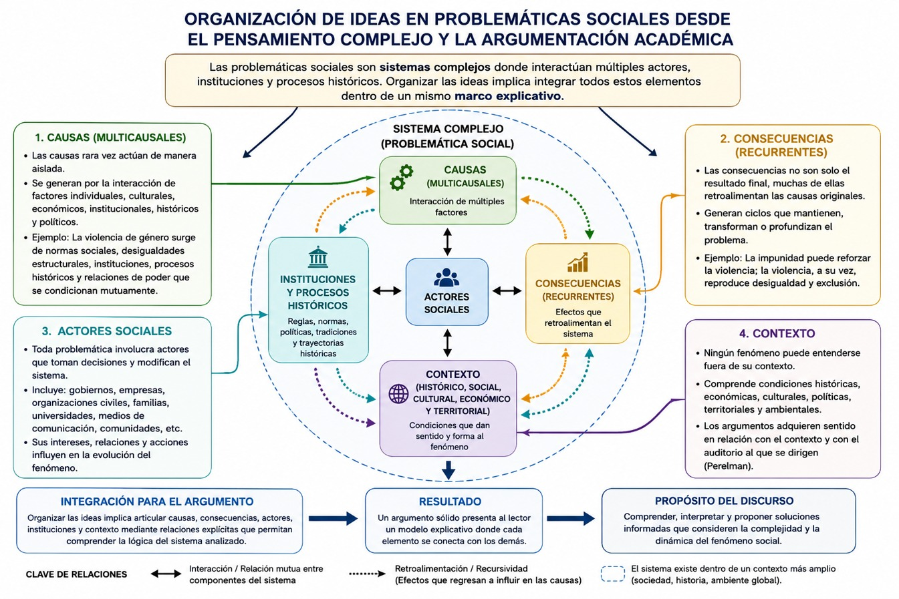
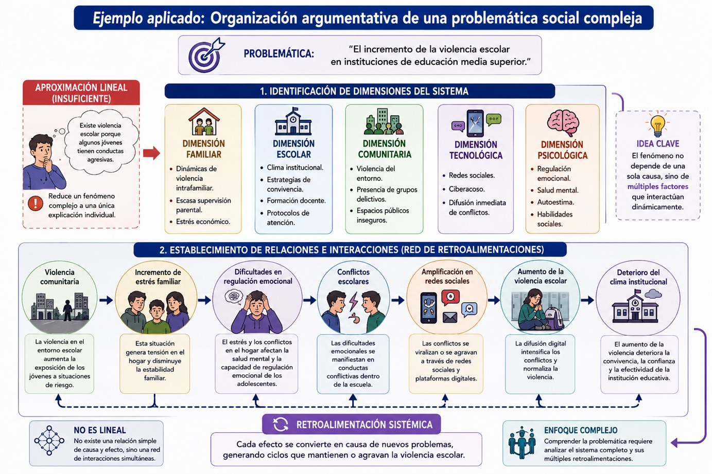
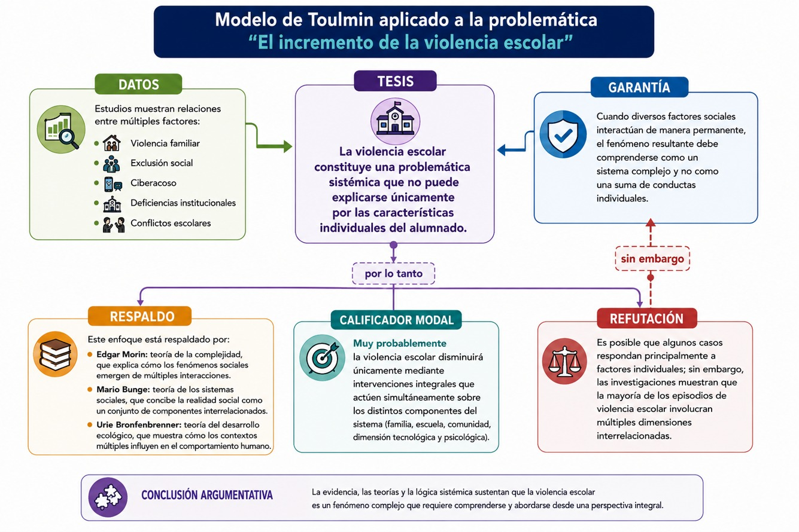
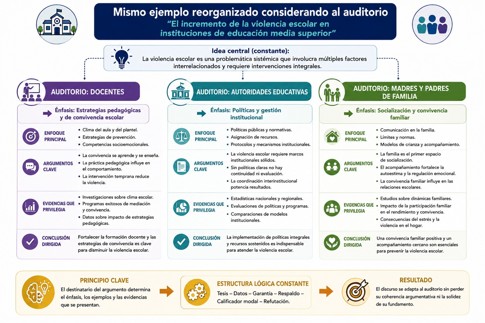

Seguramente uno de los mayores desafíos que has enfrentado en la universidad es elaborar un texto argumentativo pues este consiste en organizar tus ideas de manera coherente sin reducir la realidad a explicaciones simples o lineales. Con frecuencia, la escritura académica se construye como una sucesión de afirmaciones independientes, donde cada idea aparece aislada de las demás y las conclusiones se presentan como resultados evidentes de una única causa. Este tipo de organización responde a una forma de pensamiento lineal heredada del paradigma cartesiano, según el cual los fenómenos pueden comprenderse dividiéndolos en partes independientes para analizarlas por separado. Aunque este enfoque resulta útil para estudiar ciertos problemas técnicos, resulta insuficiente cuando se pretende comprender la complejidad de los fenómenos sociales.
A lo largo de esta UCA hemos revisado que la realidad está conformada por sistemas abiertos, dinámicos e interdependientes donde interactúan múltiples actores, instituciones, procesos históricos, dimensiones económicas, políticas, culturales y ambientales. Como hemos visto, desde la perspectiva del pensamiento complejo propuesta por Edgar Morin, conocer implica establecer relaciones entre elementos aparentemente dispersos, reconocer la incertidumbre y comprender que las explicaciones nunca son completamente lineales. De manera semejante, Mario Bunge sostiene que los sistemas sociales poseen propiedades emergentes que únicamente pueden comprenderse analizando las relaciones entre sus componentes y no estudiando cada uno de manera aislada.
Estas ideas tienen profundas implicaciones para la argumentación. En este sentido, argumentar no consiste únicamente en presentar opiniones ordenadas de manera lógica; implica construir una explicación capaz de representar la complejidad de la realidad. Un argumento sólido debe mostrar cómo interactúan los distintos factores que participan en una problemática, identificar las relaciones entre causas y consecuencias, reconocer los procesos de retroalimentación y justificar por qué determinadas evidencias sustentan una conclusión específica. En consecuencia, organizar las ideas significa organizar también la comprensión del fenómeno que se pretende explicar.
Los modelos argumentativos estudiados en este bloque fortalecen esta perspectiva. Stephen Toulmin demuestra que la fuerza de un argumento depende de la manera en que las evidencias se articulan con las garantías y los respaldos teóricos, mientras que Chaim Perelman recuerda que toda organización discursiva debe construirse pensando en el auditorio y en las relaciones que éste establecerá entre las distintas ideas del texto. Ambos autores coinciden en que argumentar exige mucho más que ordenar información; requiere construir una arquitectura conceptual capaz de hacer visibles las conexiones que existen entre los distintos elementos de la realidad.
Tradicionalmente, la enseñanza de la escritura académica ha privilegiado una organización lineal de las ideas. Se recomienda a la o el estudiante elaborar una introducción, desarrollar varios argumentos y finalizar con una conclusión. Aunque esta estructura continúa siendo útil para ordenar un texto, muchas veces conduce a una visión excesivamente simplificada del conocimiento cuando se interpreta como una secuencia rígida donde cada idea depende únicamente de la anterior.
Recordemos que el pensamiento complejo propone superar esta limitación mediante una organización relacional del conocimiento. Edgar Morin sostiene que comprender significa establecer conexiones entre distintos elementos, integrar dimensiones diversas y reconocer que cada fenómeno forma parte de un sistema mayor. Desde esta perspectiva, las ideas no deben organizarse únicamente por orden de aparición, sino por las relaciones que mantienen entre sí. En términos argumentativos, esto significa que un argumento no puede analizarse de manera aislada. Cada afirmación encuentra su sentido en relación con otras afirmaciones, con las evidencias disponibles, con los marcos teóricos utilizados y con el contexto histórico donde se desarrolla la discusión. Un texto académico de calidad no consiste en una suma de párrafos independientes, sino en una estructura donde cada sección fortalece y complementa a las demás.
Esta organización relacional puede compararse con el funcionamiento de una red. En una red informática, ningún nodo adquiere significado por sí mismo; su funcionamiento depende de las conexiones que establece con otros nodos. De manera semejante, en un texto argumentativo cada idea constituye un nodo conceptual que obtiene su fuerza explicativa gracias a las relaciones que mantiene con el resto del discurso.
Por ejemplo, supongamos que deseas argumentar que la pobreza contribuye al incremento de la violencia en determinadas regiones del país. Un enfoque lineal podría limitarse a presentar datos estadísticos sobre pobreza, posteriormente cifras de violencia y finalmente concluir que existe una relación entre ambas variables.
Sin embargo, una organización relacional obligaría a preguntarse:
- • ¿Qué procesos económicos producen la pobreza?
- • ¿Cómo intervienen las instituciones públicas?
- • ¿Qué papel desempeñan la desigualdad educativa y laboral?
- • ¿Cómo interactúan las organizaciones criminales con estos procesos?
- • ¿Qué efectos generan las políticas sociales?
- • ¿Existen mecanismos de retroalimentación entre violencia y pobreza?
El resultado deja de ser una explicación basada en una única causa para convertirse en un análisis donde múltiples dimensiones interactúan de manera simultánea. Esta forma de organización se aproxima a los mapas conceptuales, mapas sistémicos y diagramas causales utilizados en el pensamiento complejo. Sin embargo, mientras éstos representan gráficamente las relaciones entre conceptos, la argumentación debe transformar dichas relaciones en un discurso coherente capaz de convencer racionalmente a un auditorio.
En consecuencia, organizar las ideas no significa únicamente decidir el orden de los párrafos. Significa identificar cuáles relaciones resultan indispensables para comprender el problema analizado y construir un recorrido argumentativo que permita al lector reconstruir dichas conexiones.
Además, recordemos que uno de los principios fundamentales del pensamiento complejo consiste en reconocer que las sociedades funcionan como sistemas abiertos integrados por múltiples actores e instituciones que interactúan continuamente. Mario Bunge define los sistemas sociales como conjuntos organizados de personas, organizaciones, normas, recursos y relaciones que desarrollan funciones específicas dentro de una colectividad. Ninguno de estos componentes puede comprenderse de manera aislada porque todos se modifican mutuamente a través de procesos permanentes de interacción. Esta concepción transforma profundamente la manera de construir argumentos. Si la realidad está organizada mediante redes de interdependencia, entonces la argumentación también debe reflejar esa estructura relacional. Cada argumento debe mostrar cómo los distintos elementos de una problemática se encuentran conectados y cómo las transformaciones ocurridas en un componente producen efectos sobre los demás.
Por ejemplo, al analizar el abandono escolar no resulta suficiente afirmar que los estudiantes desertan debido a la pobreza. Un análisis complejo exige reconocer que el fenómeno surge de la interacción entre múltiples factores: condiciones económicas familiares, calidad del sistema educativo, expectativas laborales, violencia comunitaria, políticas públicas, capital cultural del hogar, acceso a tecnologías digitales, salud mental y oportunidades de movilidad social. Todos estos elementos forman parte de una red donde las relaciones son recíprocas y dinámicas.
En consecuencia, la organización del texto debe reflejar esta complejidad, es decir, en lugar de dedicar un apartado independiente a cada variable, el estudiante debe mostrar cómo cada una influye sobre las demás, de modo que las causas dejan de presentarse como elementos aislados para convertirse en procesos interrelacionados que explican conjuntamente el fenómeno estudiado.
Desde la perspectiva de Toulmin, estas relaciones fortalecen las garantías que vinculan las evidencias con las conclusiones. Una explicación sustentada únicamente en una variable posee menor capacidad argumentativa que aquella que demuestra la existencia de múltiples relaciones causales y contextuales. Desde la perspectiva de Perelman, esta organización facilita que el auditorio comprenda la lógica del razonamiento y otorgue mayor adhesión a la tesis defendida, pues percibe que el análisis considera la complejidad de la realidad y evita simplificaciones injustificadas.
Esta manera de organizar las ideas posee además una importante dimensión metacognitiva. Mientras escribe, el estudiante debe preguntarse constantemente: ¿qué relaciones estoy dejando fuera del análisis?, ¿qué actores aún no he considerado?, ¿qué conexiones podrían modificar mi interpretación?, ¿qué dimensiones permanecen invisibles? Estas preguntas permiten reorganizar continuamente el discurso y fortalecer la calidad del razonamiento.
A fin de reorganizar continuamente el discurso puedes apoyarte en la idea de que las problemáticas sociales constituyen sistemas complejos donde interactúan múltiples actores, instituciones y procesos históricos. En consecuencia, organizar adecuadamente las ideas implica integrar todos estos elementos dentro de un mismo marco explicativo.
La primera dimensión que debe incorporarse corresponde a las causas. Desde el pensamiento complejo, las causas rara vez actúan de manera aislada. Es más apropiado hablar de multicausalidad, es decir, de la convergencia de diversos factores que, al interactuar entre sí, producen determinados efectos. Así, un fenómeno como la violencia de género no puede explicarse exclusivamente por factores individuales, culturales o económicos; surge de la interacción entre normas sociales, desigualdades estructurales, instituciones, procesos históricos y relaciones de poder. La organización del argumento debe reflejar esta complejidad mostrando cómo las distintas causas se condicionan mutuamente.
La segunda dimensión corresponde a las consecuencias. En un sistema complejo, las consecuencias no constituyen únicamente el resultado final de un proceso; muchas de ellas retroalimentan nuevamente las causas originales, generando ciclos que mantienen o transforman el sistema. Edgar Morin denomina a este fenómeno recursividad, mientras que la teoría de sistemas lo identifica como procesos de retroalimentación. Un buen argumento debe hacer visibles estas dinámicas.
Por ejemplo, el desempleo puede incrementar los niveles de pobreza; la pobreza puede favorecer la deserción escolar; la deserción escolar limita posteriormente las oportunidades laborales, reproduciendo nuevamente el desempleo. En este caso, la consecuencia se convierte simultáneamente en una nueva causa. Si organizas tu texto únicamente mediante una secuencia lineal de acontecimientos, perderás de vista esta dinámica sistémica. En cambio, al incorporar relaciones recursivas, su explicación adquiere mayor profundidad y capacidad interpretativa.
Una tercera dimensión corresponde a las y los actores sociales. Toda problemática involucra personas, grupos, organizaciones e instituciones cuyas decisiones modifican continuamente el funcionamiento del sistema. Los gobiernos diseñan políticas públicas; las empresas generan dinámicas económicas; las organizaciones civiles promueven procesos de participación; las familias transmiten valores; las universidades producen conocimiento. Ninguno de estos actores actúa de manera independiente. Sus acciones se condicionan mutuamente y generan efectos que repercuten sobre el conjunto del sistema. Por ello, la organización argumentativa debe identificar quiénes intervienen en el problema, cuáles son sus intereses, qué relaciones establecen y cómo influyen en la evolución del fenómeno.
Finalmente, resulta indispensable incorporar el contexto. Ninguna problemática social puede comprenderse fuera de las condiciones históricas, económicas, culturales y territoriales donde ocurre. Una política pública que produce resultados positivos en una región puede fracasar completamente en otra debido a diferencias institucionales, ambientales o culturales. Del mismo modo, un argumento que resulta convincente en determinado contexto puede perder fuerza cuando cambian las circunstancias. Esta es precisamente una de las enseñanzas fundamentales de Chaim Perelman: toda argumentación adquiere sentido en relación con el contexto y con el auditorio al que se dirige.
Integrar causas, consecuencias, actores y contextos exige abandonar definitivamente la idea de que un argumento puede construirse como una simple sucesión de afirmaciones independientes. Cada uno de estos elementos debe aparecer articulado mediante relaciones explícitas que permitan al lector comprender la lógica del sistema analizado. En este sentido, escribir un texto académico implica construir un modelo explicativo de la realidad, donde las conexiones entre los distintos componentes resultan tan importantes como los propios conceptos.
Esta forma de organización favorece además el desarrollo del pensamiento crítico. Cuando aprendes a identificar relaciones entre actores, procesos y contextos, también desarrollas la capacidad para cuestionar explicaciones simplificadoras, reconocer la existencia de múltiples perspectivas e identificar dimensiones que habitualmente permanecen invisibles. La argumentación deja entonces de ser un ejercicio de reproducción de información para convertirse en un proceso de análisis, interpretación y construcción de conocimiento.
Finalmente, resulta indispensable incorporar el contexto. Ninguna problemática social puede comprenderse fuera de las condiciones históricas, económicas, culturales y territoriales donde ocurre. Una política pública que produce resultados positivos en una región puede fracasar completamente en otra debido a diferencias institucionales, ambientales o culturales. Del mismo modo, un argumento que resulta convincente en determinado contexto puede perder fuerza cuando cambian las circunstancias. Esta es precisamente una de las enseñanzas fundamentales de Chaim Perelman: toda argumentación adquiere sentido en relación con el contexto y con el auditorio al que se dirige.
Integrar causas, consecuencias, actores y contextos exige abandonar definitivamente la idea de que un argumento puede construirse como una simple sucesión de afirmaciones independientes. Cada uno de estos elementos debe aparecer articulado mediante relaciones explícitas que permitan al lector comprender la lógica del sistema analizado. En este sentido, escribir un texto académico implica construir un modelo explicativo de la realidad, donde las conexiones entre los distintos componentes resultan tan importantes como los propios conceptos. Lo puedes ver en el siguiente diagrama:

Esta forma de organización favorece además el desarrollo del pensamiento crítico. Cuando aprendes a identificar relaciones entre actores, procesos y contextos, también desarrollas la capacidad para cuestionar explicaciones simplificadoras, reconocer la existencia de múltiples perspectivas e identificar dimensiones que habitualmente permanecen invisibles. La argumentación deja entonces de ser un ejercicio de reproducción de información para convertirse en un proceso de análisis, interpretación y construcción de conocimiento.
En síntesis, organizar las ideas con base en relaciones sociales complejas implica abandonar la búsqueda de explicaciones únicas para construir argumentos capaces de representar la naturaleza sistémica de la realidad. La calidad de un texto argumentativo ya no depende únicamente de la cantidad de información presentada, sino de tu capacidad para establecer conexiones significativas entre los diversos elementos que conforman una problemática social. Este cambio representa uno de los aportes más importantes del pensamiento complejo a la argumentación académica y constituye el fundamento sobre el cual se desarrollarán las estrategias de planificación, recuperación de información y construcción de propuestas.
Ahora observa el ejemplo de organización argumentativa de una problemática social compleja:

Ahora veamos el mismo ejemplo organizado mediante el modelo de Toulmin:

Finalmente, te presentamos el mismo ejemplo reorganizado considerando al auditorio:

Este ejemplo muestra cómo el pensamiento complejo, Toulmin y Perelman funcionan de manera complementaria. El primero permite comprender la complejidad de la realidad; el segundo organiza rigurosamente el razonamiento; el tercero orienta la construcción del discurso hacia un proceso de comunicación racional con el auditorio.
- Toulmin, Stephen (2003). Los usos de la argumentación. España: Península.
- Perelman, Chaim (1997). El imperio retórico. Retórica y argumentación. Colombia: Norma.
- Perelman, C., & Olbrechts-Tyteca, L. (1989). Tratado de la argumentación. La nueva retórica. Gredos.